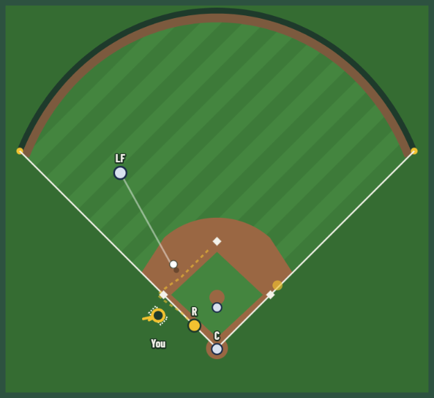

I study data analytics at Miami University, and this year I'm the head football analytics intern for Miami RedHawks Football. Last season I worked on performance analytics for RedHawks softball. I want to work in a baseball or football front office.

Windmill
A third base coach simulator. A runner on second is rounding third on a single to the outfield, and you have five seconds to send him or hold him. Then you see what really happened and watch the broadcast clip.
8,982 real decisions from 2024 to 2026, pulled from Statcast and the MLB Stats API with an R pipeline. The game is plain JavaScript with a shared leaderboard.
The Scottie Effect
Do players falter on Sunday when Scottie Scheffler is in the hunt?
PGA Tour final rounds since the 2022 season, from ESPN's golf data through Ray Carpenter's golfastr package. When Scheffler started Sunday in the top 15 and within six shots of the lead, the players tied with or ahead of him averaged 0.89 under par. The other 1,195 final rounds averaged 1.53 under.
Experience
| 2026–now | Head football analytics internMiami RedHawks Football | I evaluate transfer portal prospects and recruiting targets, track FBS and FCS performance week by week, and chart game and practice data for the coaches. |
| 2025–26 | Performance analytics student managerMiami RedHawks Softball | I wrote opponent scouting reports and worked with the coaches on lineup construction, using Trackman, Synergy, and AWRE. The team led the MAC in ERA and was second in OPS and home runs. |
| 2025–now | Data analytics internDynamic Metal Services, Cleveland | I rebuilt the old data workflows with the Dropbox API, Excel, and Power Query. Day to day I turn raw lab output into clean datasets and handle ad hoc analysis and charts. |
| 2025–now | PresidentMiami University Sport Analytics Club | Before becoming president I ran the club's events. I built NBA playoff and March Madness models in Python and set up talks with analysts and executives from MLB, the NBA, and the NHL. |
| 2023–25 | Guest services and event operationsCleveland Guardians and Cavaliers | I also interned with Guardians ballpark operations for my high school senior capstone. |
| 2020–23 | Certified refereeU.S. Soccer Federation | I worked youth matches in Northeast Ohio as a head referee and assistant referee. |
School
Miami University in Oxford, Ohio. B.A. in data analytics with minors in statistical methods and business analytics and a concentration in sport analytics. Eligible to graduate in May 2027.
Honors College, RedHawk Excellence Scholar, 3.6 GPA. National Merit Commended Student. Treasurer of the Miami University Golf Club.
Tools
- Languages
- R, Python, SAS, SQL
- Software
- Power BI, Tableau, Trackman, Synergy, AWRE